Shoulder dislocation / instability: rehab exercises & recovery plan
The shoulder has slipped partly (subluxation) or fully (dislocation) out of its socket. Strong rotator cuff and shoulder-blade muscles are the first-line treatment. Young athletes who dislocate often may need to discuss surgery.
Common in: Wrestling, volleyball, goalkeepers, gym · Body area: Shoulder · Updated November 2026
Education, not diagnosis. This guide explains how this injury is usually rehabilitated. It cannot tell you what injury you have — see a doctor or physiotherapist to confirm it, especially after a fall, a pop or surgery.
Follow this plan day by day — free. The IKJON app turns it into a calendar with animated demos, timers and a pain diary. No account, no ads.
Start the Shoulder dislocation / instability planTypical signs
- Shoulder 'went out' or felt like it slipped
- Fear when the arm goes up and back (throwing position)
- Weak or 'dead' arm afterwards
See a doctor first if you have any of these
- Shoulder still out of place — go to hospital, don't push it back yourself
- Numbness in the arm or hand
- First dislocation over age 40 (higher chance of rotator cuff tear)
How long does recovery take?
It depends on how serious the injury is. These are typical plan lengths:
| Severity | Usual description | Typical plan |
|---|---|---|
| Partial slip Subluxation | Shoulder slipped but went back by itself. | 60 days (about 9 weeks) |
| First dislocation Reduced by doctor | Fully out, put back in hospital. | 90 days (about 3 months) |
| Keeps happening Recurrent | Several episodes — also see a specialist. | 120 days (about 4 months) |
The rehab plan, stage by stage
Move to the next stage only when you meet its “move on when” checks — not just because the weeks have passed.
Protect
Goal: Settle pain, keep the shoulder blade working.
Pendulum2 × 1 min
Mobility · Gentle shoulder movement- Lean forward with a hand on a table.
- Let the sore arm hang loose.
- Make small circles by swaying your body.
Tip: Arm stays relaxed — the body moves it.
Shoulder blade squeeze3 × 10
Isometric · Scapular muscles- Sit or stand tall.
- Draw shoulder blades back and down.
- Hold 5 s.
Tip: No shrugging up to the ears.
Grip squeeze3 × 10
Strength · Grip strength- Squeeze a soft ball or towel.
- Hold 3–5 s.
- Relax fully.
Tip: Squeeze with the elbow straight later in rehab.
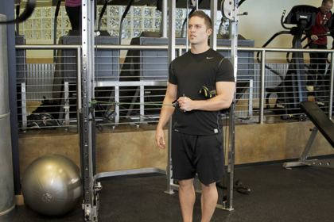
Band external rotation3 × 15
Strength · Rotator cuff · light, elbow at side- Elbow at your side, towel under it, band in hand.
- Rotate the forearm outward.
- Return slowly.
Tip: Elbow stays touching the towel.
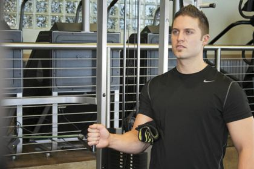
Band internal rotation3 × 15
Strength · Rotator cuff · light- Elbow at your side, band anchored to the outside.
- Rotate the forearm in towards the belly.
- Return slowly.
Tip: Smooth and controlled.
Move on when:
- Arm to shoulder height pain-free
Cuff strength
Goal: Rotator cuff and shoulder-blade strength.
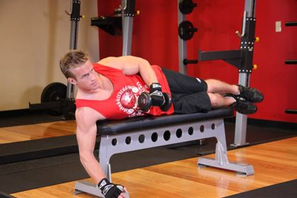
Side-lying external rotation3 × 12
Strength · Rotator cuff (infraspinatus)- Lie on your side, towel under the top elbow, elbow bent 90°.
- Rotate the forearm up towards the ceiling.
- Lower slowly over 3 s.
Tip: One of the best-studied rotator cuff exercises.
Band external rotation3 × 15
Strength · Rotator cuff- Elbow at your side, towel under it, band in hand.
- Rotate the forearm outward.
- Return slowly.
Tip: Elbow stays touching the towel.
Band internal rotation3 × 15
Strength · Rotator cuff- Elbow at your side, band anchored to the outside.
- Rotate the forearm in towards the belly.
- Return slowly.
Tip: Smooth and controlled.
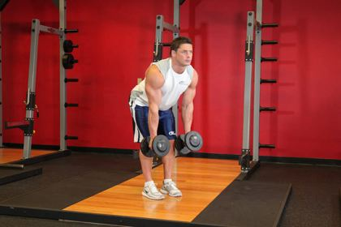
Bent-over row3 × 12
Strength · Upper back, shoulder blades- Hinge forward with a flat back, weights or band in hands.
- Pull the elbows back, squeezing the shoulder blades.
- Lower slowly.
Tip: Keep the neck long and the back flat.
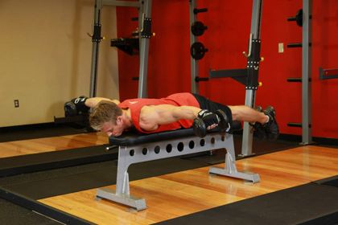
Prone T & Y raise3 × 10
Strength · Lower & middle trapezius- Lie face down on a bench or the floor.
- Lift the arms out to a 'T', then up to a 'Y', thumbs up.
- Lower slowly.
Tip: Small lift, no shrugging.
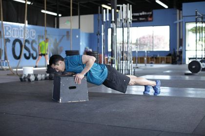
Wall push-up plus3 × 12
Strength · Chest, serratus anterior- Hands on a wall at shoulder height, body straight.
- Bend the elbows to bring the chest to the wall.
- Push back, then push a little further to spread the shoulder blades.
Tip: The 'plus' at the end protects the shoulder.
Move on when:
- Strength nearly equal both sides
Strength
Goal: Strength in more positions.
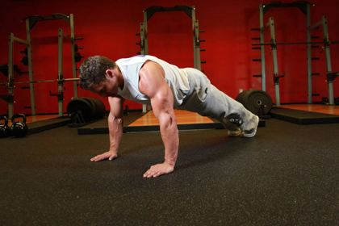
Push-up3 × 10
Strength · Chest, arms, core- Hands under shoulders, body in a straight line (knees down to make it easier).
- Lower the chest towards the floor.
- Push back up without the hips sagging.
Tip: Too hard? Start with wall push-ups.
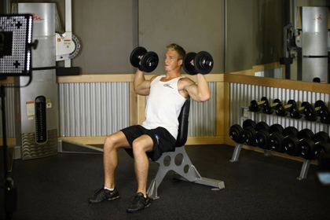
Dumbbell shoulder press3 × 10
Strength · Overhead strength- Sit or stand with light dumbbells at shoulder height.
- Press up in a pain-free arc.
- Lower over 3 s.
Tip: Start light; pain should stay 3/10 or lower.
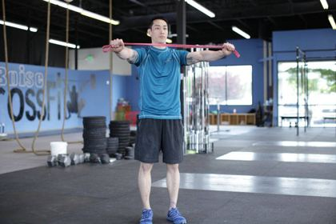
Band pull-apart3 × 15
Strength · Rear shoulder, upper back- Hold a band at shoulder height, arms straight.
- Pull the band apart to touch the chest.
- Return slowly.
Tip: Ribs down, don't arch the back.
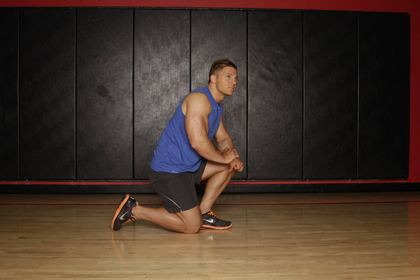
Forearm plank3 × 30 s
Core · Whole core- Forearms on the floor, elbows under shoulders.
- Lift into a straight line from head to heels.
- Hold and breathe.
Tip: Squeeze glutes; don't let the hips sag.
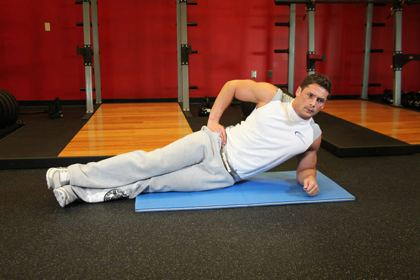
Side plank3 × 20 s
Core · Obliques, side of the trunk- On your side, elbow under the shoulder.
- Knees bent first, then straight legs.
- Lift hips into a line and hold.
Tip: Head, hips, feet in one line.
Move on when:
- Push-ups and pressing without fear
Return to sport
Goal: Sport positions and contact.
Push-up3 × 12
Strength · Chest, arms, core- Hands under shoulders, body in a straight line (knees down to make it easier).
- Lower the chest towards the floor.
- Push back up without the hips sagging.
Tip: Too hard? Start with wall push-ups.
Dumbbell shoulder press3 × 10
Strength · Overhead strength- Sit or stand with light dumbbells at shoulder height.
- Press up in a pain-free arc.
- Lower over 3 s.
Tip: Start light; pain should stay 3/10 or lower.
Prone T & Y raise3 × 12
Strength · Lower & middle trapezius- Lie face down on a bench or the floor.
- Lift the arms out to a 'T', then up to a 'Y', thumbs up.
- Lower slowly.
Tip: Small lift, no shrugging.
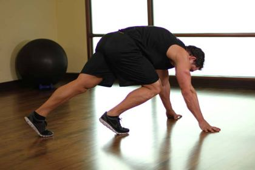
Mountain climbers3 × 20
Cardio · Core, heart rate- High plank position, hands under shoulders.
- Drive one knee towards the chest, then switch.
- Keep hips low and steady.
Tip: Slow it down to make it a core exercise.
Band external rotation3 × 15
Strength · Rotator cuff · arm at 90°- Elbow at your side, towel under it, band in hand.
- Rotate the forearm outward.
- Return slowly.
Tip: Elbow stays touching the towel.
Move on when:
- Full range without fear
- Cleared by doctor/physio for contact
Important: Avoid the arm up-and-back position early. Follow your doctor's advice on sling use.
What the research says
Strength of evidence: Moderate
- Rotator cuff and shoulder-blade strengthening is the standard first treatment after a dislocation.
- Young athletes have a high chance of it happening again, so repeated dislocations should be discussed with a specialist.
Sources: Clinical practice guidelines and cohort studies on shoulder instability
Common questions
How long does shoulder dislocation / instability take to heal?
It depends on severity. Partial slip: about 60 days (about 9 weeks). First dislocation: about 90 days (about 3 months). Keeps happening: about 120 days (about 4 months). Move on by meeting each stage's checks, not by the calendar alone.
When should I see a doctor?
See a doctor or physiotherapist to confirm the injury, and get help urgently if you notice: Shoulder still out of place — go to hospital, don't push it back yourself; Numbness in the arm or hand; First dislocation over age 40 (higher chance of rotator cuff tear).
Should exercises hurt?
Mild discomfort up to about 3–4 out of 10 that settles within 24 hours is usually acceptable. Stop if pain is sharp, goes above 5 out of 10, or swelling increases afterwards.
Ready to start? Open the plan in the IKJON app and it guides you day by day, with demos for every exercise.
Start the plan free